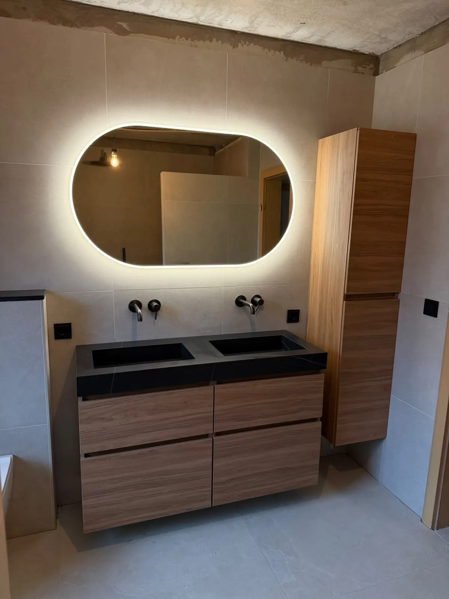
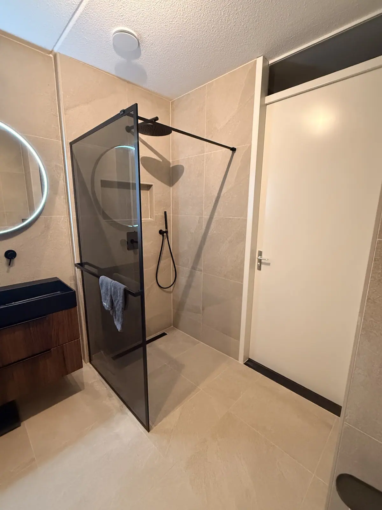
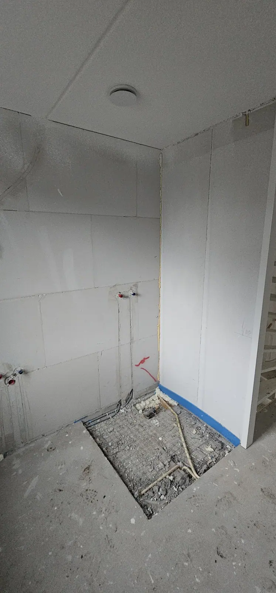
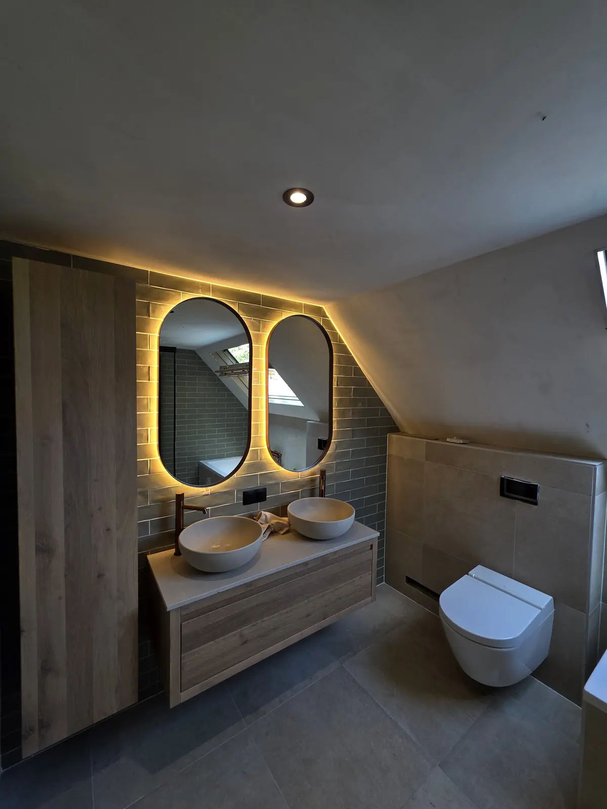
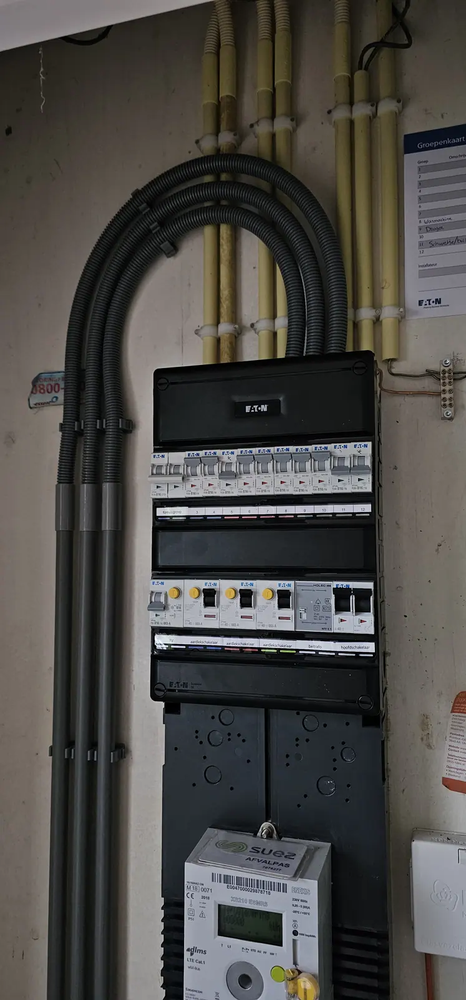
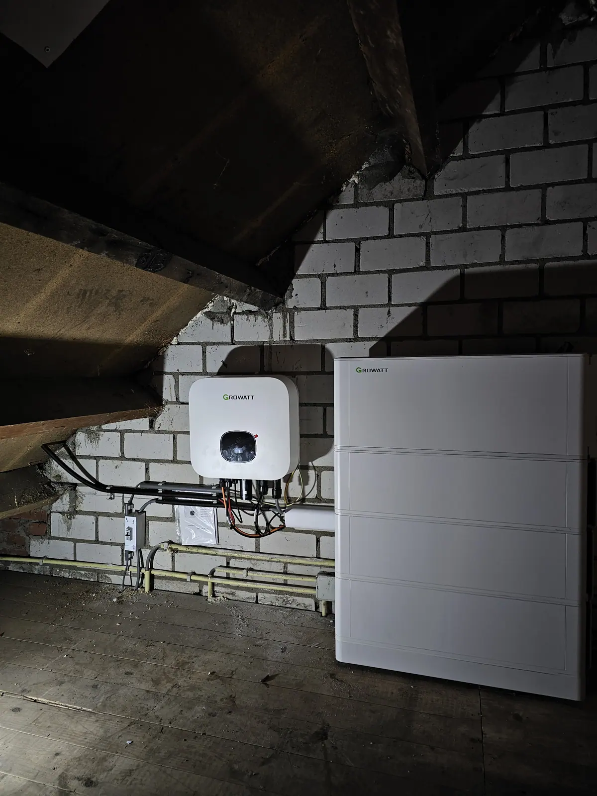
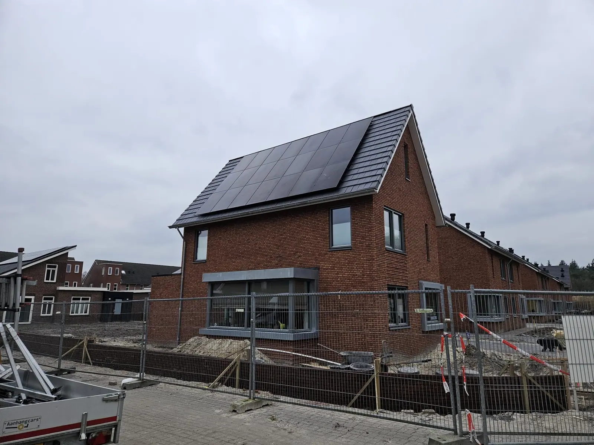

Installateur, loodgieter, verbouwer en renovatiebedrijf in Coevorden: badkamer, toilet, elektra, zonnepanelen, thuisbatterij, aanbouw en loodgieterwerk
Oosterveld verzorgt installatie, loodgieterwerk, verbouw en renovatie in Coevorden en omgeving: van badkamer en elektra tot zonnepanelen, aanbouw en complete verbouwingen. Eén vakman, netjes uit één hand.
Installatie, verbouw en renovatie in Coevorden
Woon je in Coevorden en wil je je badkamer of toilet laten verbouwen, een nieuwe meterkast laten plaatsen of zonnepanelen laten installeren? Oosterveld uit Emmen verzorgt dat van begin tot eind, zodat je maar met één partij te maken hebt.
Coevorden ligt op ongeveer 20 kilometer van Emmen. Coevorden valt onder de gemeente Coevorden in Drenthe. Voor klussen in Coevorden komen we langs voor de opname en bespreken we samen wat er nodig is. We werken ook in de buurt, zoals in Dalen, Sleen, Schoonebeek, Oosterhesselen en Gramsbergen.
- Eén vakman voor badkamer, elektra en installatie
- Eerst een richtprijs, daarna een vaste prijs
- Persoonlijk contact met Jasper

Wat we voor je doen in Coevorden
Kies het onderdeel waar je hulp bij zoekt.
Badkamer verbouwen
Complete badkamerverbouwing, van sloop tot oplevering.
Lees meer →Toilet renovatie
Hangtoilet, fonteintje en nieuw tegelwerk.
Lees meer →Elektra en kabelwerk
Meterkast, volledig kabelwerk, laadpaal en storingen.
Lees meer →Zonnepanelen
Voor plat en schuin dak, woning en bedrijf.
Lees meer →Loodgieterwerk
Leidingwerk verleggen, keuken en sanitair aansluiten.
Lees meer →Thuisbatterij
Opslag van je zonnestroom, netjes aangesloten.
Lees meer →Zo ziet het eruit
Van kale ruimte tot afgewerkte badkamer. Sleep over de foto.


VoorNaBadkamer J: van kale douchehoek naar afgewerkte inloopdouche
Ons werk, ook voor klanten in en rond Coevorden
Een selectie uit onze projecten.




Wat klanten zeggen
Reviews van klanten van Oosterveld.
“Zeer snelle prijsopgave voor een renovatie van de badkamer. Ondanks dat wij de samenwerking niet aangaan, communiceert hij erg positief en professioneel.”
“Voor een nieuwe meterkast hebben we Jasper gevraagd. Hij reageerde direct en heeft de klus perfect geklaard. We vroegen ook om wat extra stopcontacten te plaatsen en ook dat was prima.”
“Super snelle reactie op mijn aanvraag op Werkspot, snel een afspraak, keurig werk en wederom snel een factuur. Absoluut een aanrader! Dank je wel Jasper voor je werk.”
“Oosterveld Installaties levert uitstekend vakmanschap. Jasper is deskundig en werkt zeer secuur, met oog voor detail. Alles wordt netjes en professioneel afgewerkt en hij denkt goed mee over de beste oplossingen.”
“Een betrouwbare, deskundige en klantgerichte vakman, dat is Jasper! Na veel wisselende ervaringen, eindelijk een vakman gevonden die doet wat hij zegt en zegt wat hij doet.”
Werkgebied rond Coevorden
We werken in Coevorden en omgeving, zoals Dalen, Sleen, Schoonebeek, Oosterhesselen en Gramsbergen.
DrentheCoevordenDalenSleenSchoonebeekOosterhesselenGramsbergen
Veelgestelde vragen
Werken jullie in Coevorden?
Ja. Oosterveld werkt in Coevorden en omgeving voor badkamer en toilet, elektra, zonnepanelen, thuisbatterijen en loodgieterwerk. Coevorden ligt op ongeveer 20 kilometer van Emmen.
Welke werkzaamheden kan ik in Coevorden laten doen?
Een badkamer of toilet verbouwen, een meterkast of groepenkast vervangen, kabelwerk aanleggen, een laadpaal aansluiten, zonnepanelen en een thuisbatterij laten plaatsen en loodgieterwerk laten uitvoeren. Alles via één aanspreekpunt.
Hoe vraag ik een richtprijs aan in Coevorden?
Via het formulier op deze site, per WhatsApp of telefonisch. Je krijgt eerst een richtprijs. Daarna komen we bij je langs voor de opname en ontvang je een definitieve prijs.
Werken jullie ook in Dalen en Sleen?
Ja, naast Coevorden werken we ook in Dalen en Sleen, en in de rest van Drenthe, Overijssel en Groningen. Twijfel je over jouw woonplaats? Stuur ons een bericht.
Klus in Coevorden? Vraag een richtprijs aan
Vul je wensen in en ontvang snel een richtprijs. Daarna komen we langs voor een vaste prijs.